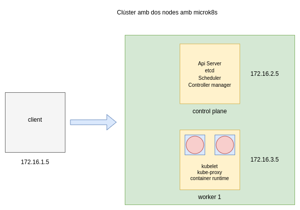

Desplegament d'un clúster de Kubernetes amb MicroK8s
Video a la prova realitzada: Proves amb microk8s: statefulset i el gestor de paquets Helm
Objectiu

Crear un clúster amb microk8s i provar diverses funcionalitats:
Creació del clúster amb els dos nodes:
Al servidor controlplane:
La instrucció microk8s add-node generarà un token per executar al segon servidor.
Al servidor worker1:
StatefulSet
StatefulSet és un objecte de la API de Kubernetes que representa un conjunt de pods que tenen un estat estable. Això vol dir que tenen identificadors únics de xarxa, persistència de dades, i mantenen un ordre a l'hora de desplegar-se, esborrar-se o actualitzar-se. Són adequats per aplicacions com bases de dades.
Estan formats per tres components, un Headless Service que és un tipus de servei que no assigna direccions IP virtuals a un conjunt de pods. Els pods, i els persistent volume claims i els persistent volums, els objectes involucrats en la persistència de dades.
apiVersion: v1
kind: Service
metadata:
name: nginx
labels:
app: nginx
spec:
ports:
- port: 80
name: web
clusterIP: None
selector:
app: nginx
---
apiVersion: apps/v1
kind: StatefulSet
metadata:
name: web
spec:
serviceName: "nginx"
replicas: 2
selector:
matchLabels:
app: nginx
template:
metadata:
labels:
app: nginx
spec:
containers:
- name: nginx
image: registry.k8s.io/nginx-slim:0.8
ports:
- containerPort: 80
name: web
volumeMounts:
- name: www
mountPath: /usr/share/nginx/html
volumeClaimTemplates:
- metadata:
name: www
spec:
accessModes: ["ReadWriteOnce"]
resources:
requests:
storage: 1Gi
Helm
Helm és un gestor de paquets per a Kubernetes. Els seus paquets s'anomenen charts, i permeten instal·lar, actualitzar, i desinstal·lar aplicacions dins dels clústers fàcilment. També permet crear charts i compartir-los.
Instal·lació d'una aplicació amb Helm
Modificar els valors que siguin necessaris passant la configuració en un fitxer values.yaml
Creació d'un Helm chart
Helm també permet crear charts propis a partir de fitxers manifests, que després es poden compartir.
Els passos a seguir són:
- Creació d'una carpeta per al projecte
- Dins de la carpeta executar helm create 'nom de l'aplicació'
- L' estructura de carpetes resultant és la següent:
carpeta chart: és on anirien els charts dels que depengués el nostre Chart, es pot deixar igual.
fitxer Chart.yaml: mostra informació del Chart, es pot deixar o modificar els camps que es vulgui.
carpeta templates: aquí és on aniran els fitxers manifests de la nostra aplicació, es poden esborrar els de mostra, només deixar _helpers.tpl i NOTES.txt.
El fitxer NOTES.txt es pot modificar per mostrar un missatge en finalitzar la instal·lació.
El fitxer _helpers.tpl es pot esborrar/modificar el seu contingut.
A la carpeta de templates/tests tamb es pot esborrar el contigut.
values.yaml: es pot esborrar el contigut i afegir els valors per defecte de les claus dels manifests que els usuaris podràn modificar.
Al fitxer del deployment.yaml afegir els valors que volem que l'usuari pugui modificar en realitzar la instal·lació:
spec:
replicas: {{ .Values.ReplicaCount }}
selector:
matchLabels:
app: graphsolver-app
...
- protocol: TCP
port: 8080
targetPort: 80
nodePort: {{ .Values.NodePortNumber }}
type: NodePort
A partir d'aquí es pot penjar en el repositori oficial d'Helm o bé penjarlo en un servidor web propi, en aquest cas per fer una prova es pot crear un contenidor docker i afegir el contingut.
Instal·lació del chart graph-solver
helm repo add josan http://localhost:3000
helm show values josan/graph-solver
helm install graph-solver josan/graph-solver -f values2.yaml
helm list